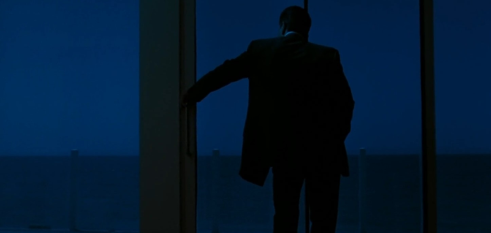
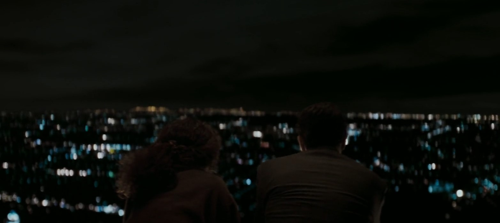
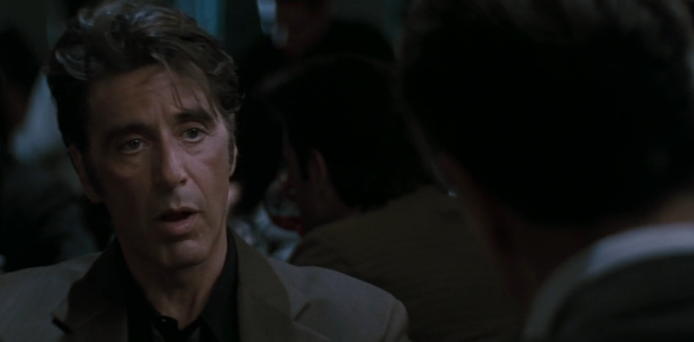
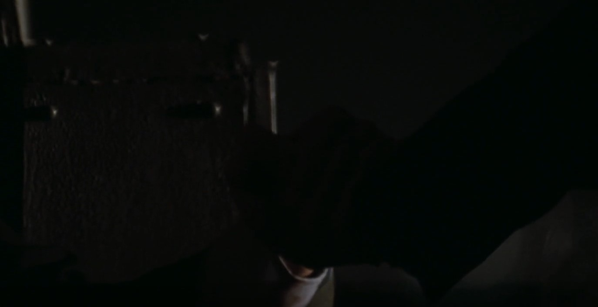
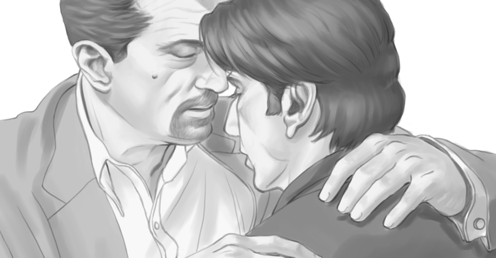

a brief summary of heat: it is the story of vincent hanna, a lieutenant in the LAPD, and neil mccauley, professional thief. it is about vincent's dogged, unrelenting pursuit of him and neil staying just one step away, until they finally violently meet after a huge bank heist gone wrong. this eventually leads to neil's demise at the hands of vincent.

what is immediately obvious about heat is that both men are, despite their diametrically opposing positions in the narrative (good and evil, cops and robbers) they share similarities in so many ways that they may as well be the same man. how are they similar? they are similar in their shared love of both their women and their craft, and how the latter love (of their work) eclipses that of their women. neil, after meeting his lover eady, only finaly calls her when he feels particularly left out and lonely ("i thought that was just the one night" - "it wasn't for me.") eady is an afterthought to neil's work. similarly, vincent repeatedly stands up and abandons his wife (of a third marriage), leaving her alone at restaurants, coming home well into the nights.
the archetypal action-film "Man"'s love of their women is a fierce, powerful presence throughout the film. there are many tender moments of neil and eady against the glittering LA skyline, and chris (part of neil's crew)'s raw, unabashed confession of "for me, the sun rises and sets with her, man." for all the testosterone-fueled machismo there's an equally strong undercurrent of romantic love. neil absolutely, positively, loves eady. he loves her more than anything in the world.
but the men also love their work. they are good at it, take pride in it ("do you see me with a born-to-die tattoo on my chest holding up a liquor store?"), and are obsessed with it. they love it. it haunts their lives. they discuss this shared love, and its resulting consequences for their personal relationships, in the scene at the restaurant. both men discuss how this is the only thing they know how to do, and that they hardly have a life outside of their work. neil mocks the idea of a conventional life - "barbeques and ballgames?" he asks dismissively. neil is so far detached from living this generic, suburban middle-class life (7 years in folsom, 3 in solitary confinement, then immediately back to heisting) that the idea in and of itself is laughable. if not the life of crime, what else? and vincent is clearly similar. he details an entire recurring dream he has wherein the victims he could not save stare lifelessly at him at a dinner table, and talks about his failing marriage. his work is the only thing he knows, and yet it haunts him as he rests and is in no small part the reason for his two (soon to be three) divorces.
both men do not use their work as an escape. simply put, there is nothing for them to escape from. they are trapped in this endless cycle of work, work, more work, because if they did they would have nothing. and in the restaurant, they notice this about themselves. they are able to form a connection and bond over their equally fucked-up lives, and there is the sense that this connection is the realest connection they have ever felt. it is a connection that (through the aggressively masculine lens of a hit action blockbuster such as heat) cannot be forged between a man and a woman, because only a man can know another man like this. only men know of men's work.
the connection is formed. vincent and neil talk about one another's dreams, vincent goes first, neil goes second. the conversation is brutally honest and personal. within five minutes of meeting one another they volunteer pieces of their psyche and put it out flat onto the table for the other to see. here is what drives me, vincent says. here is my entire being, my work, my home life, the demons that haunt me, here they all are laid out on this map. and neil accepts this, nods knowingly, and understands what he is saying.
reality comes quickly crashing down. it feels like vincent practically forgets that the man sitting opposite to him is his enemy, until he remembers - yes, i am the cop, and he is the robber, and i must catch him. the conversation ends with them assuming these societal roles once more, and they leave the restaurant. vincent admits that maybe in another world, they would have become friends, perhaps lived their "barbeques and ballgames" life. but his work comes above all of that, and he will commit to his responsibilities above all else.
i think it is reductive to assert that they are truly the same man. i have spent the last four paragraphs arguing their similarities, so let me now argue their differences. neil, once finding eady, now has an "out". he has something he wants to do outside of his work, a motivation that did not exist prior to meeting her. he still scoffs at the idea of a conventional life, but his newfound alternative of escaping off to fiji with eady is romantic to the point of childishness. eady brings his entire worldview and existing way of life into question. "don't let yourself get attached to anything you are not willing to walk out on in thirty seconds flat if you see the heat around the corner", this mantra he repeats to himself, to chris, and to vincent, he disregards it for one last shot at the heist - he does it for eady, the "plans" he mentions as they discuss it at the junkyard. he is fully aware of all this heat around the corner, he knows vincent is on his tail. and yet? just one more shot. one more shot so he can fly away with his lover.
the section about womenthis is a hollywood blockbuster made in the 1990s where the two men casted as the leads are practically hollywood's platonic ideal of men. it's hard to think of actors who embody masculinity more than prime robert de niro and al pacino, and here they are side by side in a quintessential dude-bro flick, one of the most Man movies of all time. shootouts and explosions galore.
and so it is obvious that the women in this movie kind of suck. in the case of eady, eady is a nothing-personalitied vessel of a much younger woman for neil to project all his desires onto. neil fucks her once, leaves for what can only be assumed to be at least weeks, and then calls her again once he is lonely, and of course eady obliges. even when neil is revealed to basically have committed heat's equivalent of 9/11 (the bank heist) she still decides to go along with him, completely inexplicably. eady serves only as a way for neil to grow as a character, to realize that there is more to life than just "taking scores", but other than that she is nothing.

the reason why the scene at the restaurant hits so hard is because you implicitly realize that there is no way in this universe that these men have ever actually discussed their home lives with any of the women close to them. the world of policework and crime is by and large a man's world, something the women in this universe can never understand unless they are victimized and killed by it (the little girl used as a hostage by shiherlis, or the string of prostitutes that the film for some yet-again-inexplicable reason shows murdered by waingro). so when vincent and neil form this bond (at least to me) the impact is strengthened by the subtle background hum of "this man has definitely never opened up to his wife about this." (of course, vincent does tell his wife about the happenings of being a detective, but only to dismiss her concerns about their marital issues - stop trying to talk to me about "Us", you bitch, i've got Dead Bodies to Solve!)
cops and robbers, or, the section where i talk about how gay this all ishere i want to take a look at vincent and neil's role as the chaser and the chased. there's something interesting about how neil, as the "criminal", ends up finding his potential escape, while vincent is offered no such mercy. vincent is doomed perpetually to chase and to chase - maybe he will catch neil, maybe he will not. but however the neil case ends there will always be another man to pursue.
and pursue him he does. i talked a little bit above about vincent's continual neglect of his wife and stepdaughter due to his work but there's an interesting aspect that comes into play here about how functionally, vincent is cheating on his wife with neil. vincent stalks and stalks neil to unrelenting ends. a significant number of scenes where he investigates neil is performed under the cold dead of night, and vincent barely comes short of gushing over his perception of neil's skill. in the initial investigation vincent assesses the sheer organization that must have taken to pull off this entire heist, and immediately decides to take the case under his department. he notes the shape charges, how they knew their response time, how well chosen the place of ambush was. and then when neil + crew attempt to rob the precious metals store, vincent spots the men climbing up electrical poles with specialized shoes, notes their technique. he is quite literally in love with their bodies and how they work, so deftly and cleanly.
like all good gay love stories this love is unrequited (unfortunately vincent does not end up growing flowers in his lungs, but he comes pretty close) just by nature of the cops-and-robbers dynamic: neil does not show the same love and care for vincent's investigative abilities because neil is actively trying to avoid him, run away from the magnifying glass vincent is trying to put him under.
how is vincent's infidelity repaid? with his wife committing the same infidelity. vincent finds another man with his wife, and he doesn't even care. "fuck my wife but don't watch my television set". my assumption is that he doesn't care because he knows that what he does is far worse - his wife's infidelity is not driven out of genuine extramarital lust but rather to just get his attention or to get back at him in some twisted way. but vincent keeps on pursuing his man neil nonetheless.
we return to the restaurant scene. throughout these 6 beautiful minutes vincent and neil sit opposite each other at the restaurant, discussing their feelings, staring into each other's eyes and sharing subtle yet knowing smiles. this is a date! this is absolutely a date! heat (1995) interrupts the action of the film halfway through to portray the two leads on a date for 6 entire minutes. compare this with the scene where neil and eady meet for the first time. eady makes the first move, neil is guarded and secure (he has good reason to be, he's reading a book about metals because his next score will be a precious metals store), but softens up to her. they sit side by side at a bar as opposed to how vincent and neil sit opposite from each other. neil and eady exchange the usual small talk "what do you do, where are you from", until they eventually get closer and more intimate, this change in tone reflected by a change in scenery - they leave the crowded, noisy, un-romantic bar for her balcony, backdropped by the glittering LA skyline. above all else it's a beautiful scene. this budding love is tender and richly portrayed and soundtracked.
and yet in this beautiful first date the chemistry and conversation is incomparable compared to the tension shared between vincent and neil in their first date. they talk about deeper, more personal things, and share knowing smiles at each other. there is no music, no shimmering lights, just two men at the same table. but the love is there all the same.

moving forward in the film, after an intense bank shootout that kills half of neil's crew and inches vincent closer and closer onto neil's trail, the men meet the same point of no return. neil, after securing the money, is finally able to take eady and get the hell out of dodge, but is made aware of waingro's whereabouts and must decide whether or not he will kill waingro or escape with eady. on the other hand, vincent discovers his stepdaughter bleeding out in the bathtub and must rush her to the ER before it's too late. he waits at his wife's side on the couch until he receives news on neil's whereabouts.
it is at this crucial point that both men make their decisions. does vincent stay by his wife's side, finally making amends and proving himself as a dedicated father figure and husband, or does he pursue neil? likewise, does neil finally chase his one shot at a real life, extricate himself from the criminal underworld, or settle his last and final score?
neil chooses the score, and vincent chooses neil.
"i told you you'd have to share me with everyone else", vincent tells his wife earlier on in the film. and off he goes to be shared once more. the film ends as they chase each other through the dead of night, guns blazing beneath LAX, ducking behind boxes and crates. it is then that vincent performs the ultimate penetration - he shoots neil through the chest, and neil falls to the ground. before he succumbs to his wounds, neil tells him "i told you i wasn't going back [to prison]", vincent says "yeah", and the two men hold hands as the screen cuts to black. directed by michael mann. let it be clear: this is sex. this is the closest men can get to having sex on screen in a film like this. these men chase each other with the lights off, breaths heavy from running back and forth, until vincent fires his load directly through neil's chest. it is sex. it is the definitive one-night-stand, where vincent knows he will never see neil again. they hold hands (aside from hugging, handholding is the only display of affection between men you wil see in a film like this) as vincent watches the man he has been running after for so long fade into nothing. this man, who understood him in a way none of his wives could in a 6-minute conversation. he is gone now.
to kill another man is to love him. it is to take a part of yourself and send it smashing against his organs, to cut him to his core, to leave viscera and blood in its trail. to love another man is to destroy him because there is nothing else you can do.

the plot regarding chris and his wife is another conduit through which this undercurrent of love courses. chris, the deuteragonist and one of neil's trusted crew members, has marital problems with his wife charlene. as part of neil's crew he's loaded - they steal hundreds of thousands of dollars worth of money like it's nothing. but he gambles it all away, putting immense strain on his marriage. the first scene with them is a screaming match, followed by chris hungover at neil's place - he explains their argument as "not enough steaks in the freezer". vegas took everything he's got. he can't provide for his wife.
"the sun rises and sets with her, man." this is one of the central quotes of the film and it is beautiful in its simplicity. his wife is his world, she is the point around which everything else orbits. he has fucked up with his wife, sure, but she's still her, and she's the only thing that matters, and this is what pushes chris to commit to the bank heist. if he could just do this one thing, get enough money and put the steaks back in the freezer maybe he could rebuild a beautiful new life with his wife.
his wife cheats on him. in the world of heat this is meaningless. everyone cheats on their partners, whether it be wih women, work, or other men. this infidelity, through some convoluted process, leads vincent's officers to use the man charlene cheated with (and subsequently charlene herself) as an asset to potentially lure chris in. vincent's officers take her to a safehouse, where she places a call to chris.
when chris arrives at the safehouse, on the verge of being captured by vincent's men, he sees charlene standing at the balcony. he is ecstatic to finally get this all over with, to escape with his one true love and finally make things work. but charlene, with a single flick of her wrist, warns him away. it is a subtle, ambiguous gesture. it's a signal that, if given to a complete stranger, would be uncertain. what did she mean by this? but chris knows. despite their marital tumult chris knows charlene and charlene knows chris and they know each other, they have built this little world between them both, and the signal is clear - it's not safe, leave.
chris leaves, and it is the last we see of him. he is presumably, safe. he made it out of everything unscathed, unlike everyone else on neil's gang (dead) or like vincent (who is still chained to his work and his marriage). chris is just another john doe, with the license plates and vehicle records to match. but what life is this? what life is he going to lead without charlene, alone? it will be a dark, sunless world.
to avoid repeating myself here i will finally set it clear the difference i see between how heat portrays the man's love of his woman, and the man's love of his work. the woman, as an underdeveloped blank-slate for the man of heat to pour his emotions into, will never understand the man above more than a surface-level knowledge. they will love each other, they will fuck, they will make these grand proclamations of how "the sun rises and sets with her", but ultimately this love does not get to their core as a person. eady will never relate to or understand neil, and charlene will never relate to understand chris. in the world of heat man and woman occupy completely different fields with no crossover. however, the love that the man has for his work is far more cerebral - it gets to the core of his essence, his being. the primal cortex of his brain that seeks joy in accomplishment. he is fulfilled from it, and when he meets other men in the same field, the connection they form is deeper than any possible love he could have for his woman. there is this implicit understanding that is absent.
in heat the man's love for his woman is achingly true and powerful, but it is immature. it is love in the same way a kindergartner loves a classmate. purely from the id. in this universe dominated and run by men, the only real love a man can have is another man.
